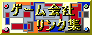

ゲームソフト通信販売！明日届きます！
8月
| goo | |
|---|---|
| １９９９年８月３１日火曜日 | |
|
gooのメールサーバに異常、３万人分のメールが消える。 前にも確かエラー出していましたよね、重要なメールはgooでは扱えませんな、まあwebメールを重要なメールに使う人はいないでしょうが。 |
| 夏休みが・・・ | |
|---|---|
| １９９９年８月３０日月曜日 | |
|
終わる。 課題が・・・。 |
| ちょっと旅行 | |
|---|---|
| １９９９年８月２９日日曜日 | |
| 家族とちょこっと旅行に行ってきました、で台場辺りとかに行きました、と言うことで内容どうこうじゃなくて疲れたんで今日はこれで終わり。 |
| クロノ・トリガー | |
|---|---|
| １９９９年８月２８日土曜日 | |
| プレイステーションに移植されるんですね、うちのＨＰでも話題にあがったことがありましたが僕はＳＦＣ版を発売日に通販で買いました、どうなんですかね、やったことのない人はやってみると良いかもしれません、僕は最初クソゲーとか思ったんですがあれゲームらしいゲームだと思うし、おもしろいと思いますよ。 |
| ２８日更新予定 | |
|---|---|
| １９９９年８月２７日金曜日 | |
| ２８日の本ＨＰの更新は、２８日の２３：００以降になると思いますのでよろしくお願いします、理由は気が向いたらここにでも書きます。 |
| I Seek You | |
|---|---|
| １９９９年８月２６日木曜日 | |
|
なんかまたICQを入れることとなりました。 前に使っていた番号は保存してなかったのですが、ここの過去ログ「４月２５日」に書いてありました。 こんな形で役に立つとは。 と言うことで、「36306446」です、よろしくお願いします。 |
| ソーテックをアップル提訴 | |
|---|---|
| １９９９年８月２５日水曜日 | |
|
やはりしましたね。 ソーテックは前から問題はないと言っていましたがどうなんでしょうか？ アメリカなどと比べてどういう結果になるのか。 |
| 人ひき殺すところだった | |
|---|---|
| １９９９年８月２４日火曜日 | |
|
昨日は自動車で出かけたが危うく人間をひき殺すところだった。 左カーブしたところに道路工事の人間がいたんだけど、道路はこんな感じ  これが左にカーブしてる。 これが左にカーブしてる。そこに薄緑に白のしまの作業着を着た人間がしゃがんでいた、その人の前にはたとえば赤いポールとか他の作業員が立っているとか何もなかった。 マジでひき殺すところだった、白のしまの道路に白のしまの人間がしゃがんでいたらみえねーよ、しかも左カーブでその人が見える位置からそこの地点に達するまで数秒しかなかったし。 あぶねーよ。 |
| テレホーダイ申し込み | |
|---|---|
| １９９９年８月２３日月曜日 | |
|
夏休みの間テレホーダイのお金もったいないので７月までで解約、９月から改めて契約。 ＮＴＴ東日本はネット上からテレホーダイの申し込みができるのでそこからした、申し込みの確認の電話が来ることになっていたが全然来る気配がなかったので問い合わせたらしっかり登録されてた。 ・・・申し込みの確認の電話は？ |
| ＧＰＳ | |
|---|---|
| １９９９年８月２２日日曜日 | |
|
今日の９：００ですね、ＧＰＳが２の１０乗でリセットされるの、僕はＧＰＳ関係は持っていないのであまり興味ないんですが、Ｙ２Ｋの前に良いテストになるとか。 あと、９９年、９月９日にも誤作動起こすかもしれないとか言われてますけどどうなんですか？ ９が並ぶのは無限大とか違うものに使っているとか言うのが理由らしいけどそれは９９．９９．９９じゃないの？ ９９年９月９日は９９．０９．０９なんじゃないの？ 違うの？ |
| テレホーダイ | |
|---|---|
| １９９９年８月２１日土曜日 | |
|
やっとテレホーダイだ、これで久しぶりにネットサーフィンができる。 が、同時にこれは夏休み終盤を意味する、ああ、気が重い、気が重い。 気が重い。 |
| 英雄伝説Ⅳクリア | |
|---|---|
| １９９９年８月２０日金曜日 | |
|
いやー遂にクリアしました、ＰＳ版英雄伝説Ⅳ、５５時間近くもかかった。 パワプロ６もペナントレース終わらせちゃいました。 これでゲームは一段落、この後サガフロンティア２でもやろうかな、でも今は大作ＲＰＧはやる気がしない、気軽に遊べるのがあれば良いんだけど。 |
| マルチユーザー | |
|---|---|
| １９９９年８月１９日木曜日 | |
|
Windowsのマルチユーザー機能（と言うのか？）使ってみたけどちょっと・・・。 新しいソフトをインストールしたときにプログラムの中に登録されていなくておかしいと思ったら違うところに登録されてた、いちいちプログラムに登録し直さないといけないわけでちょっとなあ。 |
| 夏休みも後半に | |
|---|---|
| １９９９年８月１８日水曜日 | |
|
あ～、夏休みが終わる。 そろそろ課題をやらないと、は～。 やだなあ。 |
| iモードより掲示板入力 | |
|---|---|
| １９９９年８月１７日火曜日 | |
|
携帯電話から入力と言うことで非常に面倒くさいく時間がかかる。 だからちょっとした時間を潰すのに便利だったりする。 今回掲示板にiモードから長々と書き込みしたが、ちょっと人を待っている間に入力した。 と言うことで今後iモードから入力があったときはそんな風にみてくれ。 |
| 新聞屋 | |
|---|---|
| １９９９年８月１６日月曜日 | |
|
僕の実家は以前書いたように新聞販売店、今回夏の甲子園で朝日新聞社からパスワードをもらい号外が表示されるページに入れるようになった。 とここまでは良いのだがこれと「ほぼ」同じものが一般の人が入られる朝日コムにも置いてある。 ここで問題なのが「ほぼ」と言うこと、まったく同じものなら「なんだ一般の人が見るのと同じものじゃないか。」で済むのだが、「ほぼ」であってまったく同じものではない、しかし９９％同じものなのである、いったい何の意味があるのかさっぱりわからない。 ファイル形式はAcrobatReaderなのだがパスワードがいる方が朝日コム上のものの４倍近い容量がある、この部分がどこかに入っているのだろうか？ 実はAcrobatReader形式は扱ったことがほとんどなく良く分からない、ちょっと見ただけではわからないだろう違い、わかる人いない？ 印刷許可などのセキュリティ等簡単に見られるところはまったく同じ、一体何処が違うんだ。 |
| 初心者マークとお別れ | |
|---|---|
| １９９９年８月１５日日曜日 | |
|
普通運転免許証を取ってから一年、やっと初心者マークを取ることができる。 自動車も父の中古をもらってワゴンＲが自家用車に、保険の登録があと一週間ほどで終了。 で、来年は実家の軽じゃない方の乗用車に車検が来るために買い換え、何とかしてスープラ買わせるぞ！ そうすりゃその３年後には～！！！ |
| わすれた？ | |
|---|---|
| １９９９年８月１４日土曜日 | |
|
あれ？ 昨日か一昨日辺りここに書くのを忘れた？ 今までテレホーダイで、２３時更新を毎日守ってきていたものが夏休みになってそれが崩れその日のうちに更新ってするようにしたらなんか更新忘れそう。 まあ、更新忘れても大したことじゃないと思うけど。 |
| １００％独り言 | |
|---|---|
| １９９９年８月１２日木曜日 | |
|
ＰＳ版英雄伝説Ⅳめちゃくちゃ時間かかるよ～、もうすでに４０時間越えてるし、良くもまあここまでやったもんだ。 そういえばメモリーカードの中見ていてＦＦⅧのデータが５０時間を超えていた、結構やったんだなああれ。 Ｎ６４パワプロ６、実際のプロ野球の日程を追い越した、夏休み中に終わらせちゃおうかな。 １００％独り言は意外にも久しぶり、おっさんはここ久しぶりにチェックしているかな。 とっととバナー作れや！（ああこれで１００％じゃなくなった。） |
| 定額ネット通信網を構築 | |
|---|---|
| １９９９年８月１１日水曜日 | |
|
東京電力、ソフトバンク、米マイクロソフトがなんか定額月２千円のインターネット接続を来年春に始める予定みたいですね、値段の２千円はNTTの定額１万円に対抗するとか、最近いろいろなところから低価格固定常時接続の話が出てきて、もうすぐ誰でも常時接続にできる日が来るのでしょうか？ 常時接続良いな～。 |
| バナー、補足 | |
|---|---|
| １９９９年８月１０日火曜日 | |
|
あれをバナーにした理由はリンクを張っていただいたＨＰでバナーの欄に |
| ドコモショートメール | |
|---|---|
| １９９９年８月９日月曜日 | |
|
iモードショートメール非対応だったのがいつの間にか対応になってますねえ。 ８月２日から対応になったんですか？ iモードのニュース見ていて初めて知った。 |
| コンシューマゲーム | |
|---|---|
| １９９９年８月８日日曜日 | |
|
このところ雑誌も買わず、テレホーダイでもないのでネットでもゲーム関係の情報全然仕入れず、一昨日久しぶりにファミ通を買ったら色々ありますね、N64カートリッジでゼルダ外伝ですか、MOTHER3カートリッジですか、ＧＢにもゼルダですか、ＧＢ版新作ゼルダはＧＢカラー買うきっかけになります。 今までずっと買わずにいましたが買いますか。 |
| バナー | |
|---|---|
| １９９９年８月７日土曜日 | |
|
バナーず～とないんですが、とりあえず、回線速度チェック用のgifをバナーにしますね、↓これ。  リンクを張って下さっている方よろしかったら使って下さい。 |
| ショックプライス | |
|---|---|
| １９９９年８月６日金曜日 | |
|
買ってみましたがシェアウェアをパソコンショップで売っていると言った感じですね。 ちょっとプログラムが組める人なら自分で作ることができると思えるレベルです。 リバーシは僕前に途中まで作りましたがプログラムを知っている人ならすぐに同レベルのものは作れると思います、逆に言うとゲームを作りたい人には良い参考になると思います、良かったら買ってみると良いかもしれません、５００円ですし。 |
| サーチエンジン | |
|---|---|
| １９９９年８月５日木曜日 | |
|
いくつか集めておいておいたんですが、久しぶりに見たらリンクが繋がらないところが多くて使っている人もいないと思いますのでトップページのリンクは外しました、いないと思いますがリンクご利用になる方は「管理者」「プロフィール」の中にあります。 リンクが切れているのは８月２１日から３１日の間に直すかもしれません。 |
| リンク先 | |
|---|---|
| １９９９年８月４日水曜日 | |
|
今回CESAにリンクを張りました。 ゲーム開発、販売にこだわらずある程度柔軟に扱っていこうと思いますのでよろしくお願いします。 ＨＰの名前は「ゲーム会社リンク集」のままでやっていきます。 正確には「ゲーム系ＨＰリンク集」と言ったところでしょうか、でもそうすると販売店や個人ページへのリンクは無いので不完全に見えてしまうし、まあ、今のままでやっていきます。 |
| 更新ペース変更 | |
|---|---|
| １９９９年８月3日火曜日 | |
| いつも前日の２３：００頃ＨＰ更新していましたが、ちょっとこれからある程度不定期になるかもしれません、遅くともその日付中には更新します。 |
| 闘魂列伝４ | |
|---|---|
| １９９９年８月2日月曜日 | |
|
ドリームキャスト本体と買って夏休みにやろうかと思っていたものの、９月上旬に延期になったんですね、ああこれで夏休みに新しくゲーム買うことなくなるかも。 まあ無理に買うこともないし、良いか。 |
| ネット月５０００円で使い放題 | |
|---|---|
| １９９９年８月１日日曜日 | |
|
ソネットと数理技研が合併で通信会社を設立し、この秋にも一般家庭向けに月額５０００円程度でインターネットが使い放題になるサービスを東京都内で始める。 NTTの定額制はどうやら一般家庭には敷居が高そうだから他に良いサービスが出てきてくれないと。 |